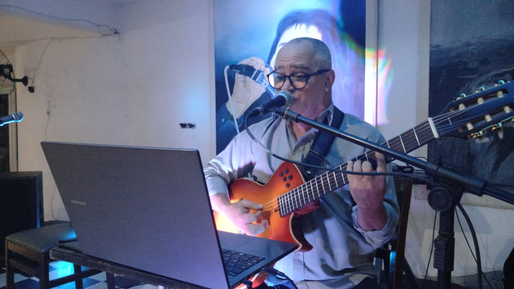
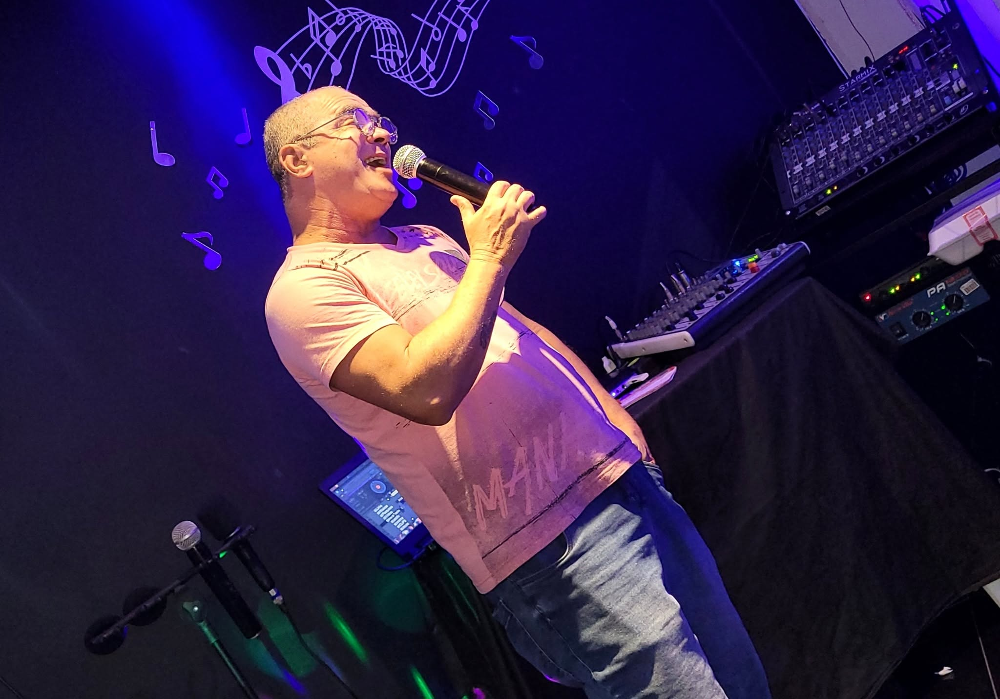
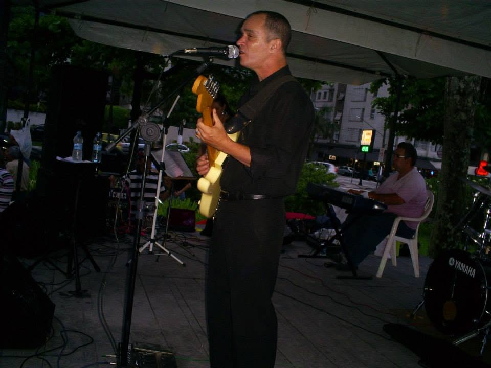

MÚSICA • ARTE • EMOÇÃO
Wilsinho Caldas
Música que conecta pessoas, histórias e emoções.

Sobre o músico
Trajetória Musical
Sua trajetória profissional na música começou em 1981, na Concha Acústica, em Santos, onde deu os primeiros passos de uma carreira que, desde então, nunca mais parou. Músico versátil, com experiência em guitarra e violão, construiu ao longo dos anos uma carreira marcada por diferentes estilos, palcos e experiências.
Durante sua trajetória na Baixada Santista, apresentou-se em diversos bares e casas da região, entre eles o Panela de Barro e o Lá em Casa, adquirindo experiência e consolidando seu trabalho como músico profissional.
Em 1996, iniciou uma nova etapa de sua carreira ao realizar seu primeiro embarque em um navio de cruzeiro da Costa Cruzeiros. A partir daí, passou a atuar também no cenário musical internacional, embarcando posteriormente em diferentes navios e vivendo experiências profissionais em alto-mar.
Ao longo dos anos, trabalhou em navios da MSC, participando de diferentes produções musicais e passando por embarcações como Rapsódia, Harmonia, Opera, Música e Orquesta. Essa experiência proporcionou contato com públicos de diferentes nacionalidades e ampliou ainda mais sua experiência como músico.
Seu último período de embarques ocorreu em 2011, pela antiga companhia Ibero Cruzeiros, onde atuou nos navios Grand Celebration e Grand Mistral.
Após sua experiência em cruzeiros, continuou sua carreira musical na Baixada Santista, participando de diversas bandas e projetos musicais. Ao longo de mais de quatro décadas de carreira, manteve-se ativo nos palcos, acompanhando diferentes formações e públicos.
Seu repertório é marcado pela diversidade e inclui pop nacional e internacional, pop rock, MPB, samba e entre outros, permitindo que transite por diferentes ambientes e estilos musicais com versatilidade.
Desde o início de sua carreira, em 1981, até os dias atuais, sua história é marcada pela paixão pela música, pela experiência adquirida em diferentes palcos e pela dedicação contínua à profissão. São mais de quatro décadas de trajetória musical, construídas com talento, experiência e amor pela arte de tocar.
![Fotografia em plano médio de Wilsinho Caldas cantando em um evento interno. Ele é um homem de pele clara, cabelos curtos grisalhos nas laterais e calvo no topo, e usa óculos de armação redonda escura. Veste camisa social branca de mangas compridas dobradas até os antebraços, com pulseiras no pulso esquerdo e aliança. Segura um microfone preto com fio na mão direita e gesticula com a esquerda enquanto sorri olhando para a frente. Ao fundo, há uma parede clara com pontos de luz coloridos, cadeiras plásticas brancas e uma mesa com toalha estampada em vermelho e verde.](imagem/wil_cantando3.jpg)
Vídeos e Apresentações
Assista a algumas das principais apresentações e trabalhos ao vivo.
PROGRAMA MÃE TERRA - TVCOM SANTOS
Agenda de shows
Show Especial
São Paulo - SP
20h00
Festival de Música
Santos - SP
19h00
Galeria



Entre em contato
Para shows, eventos, parcerias ou outras informações, envie uma mensagem.